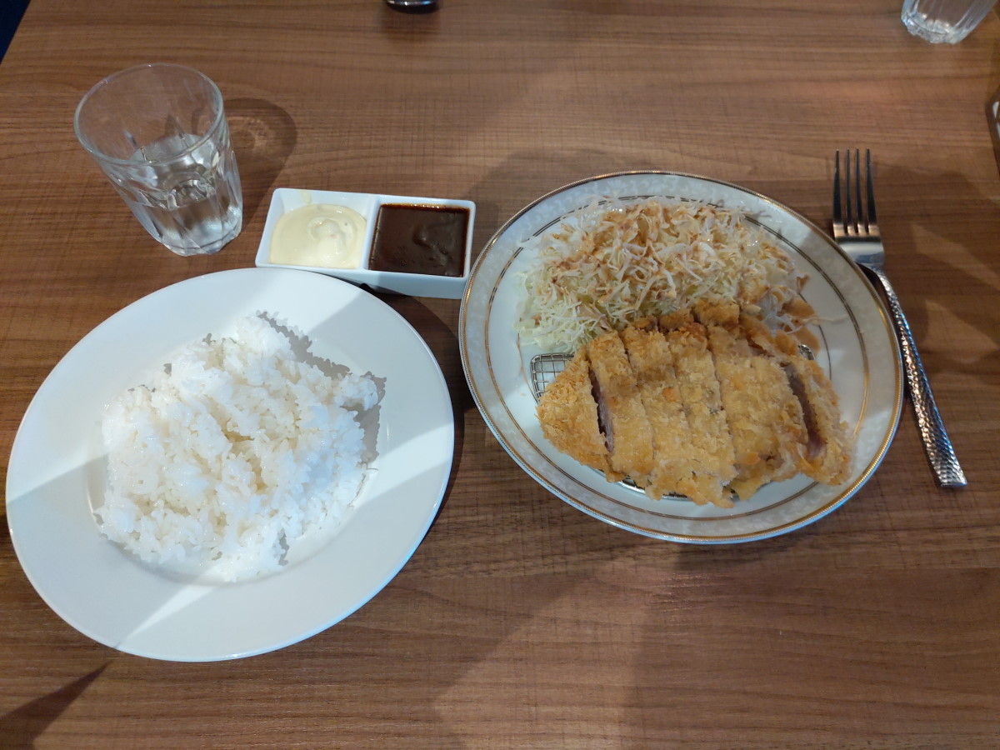
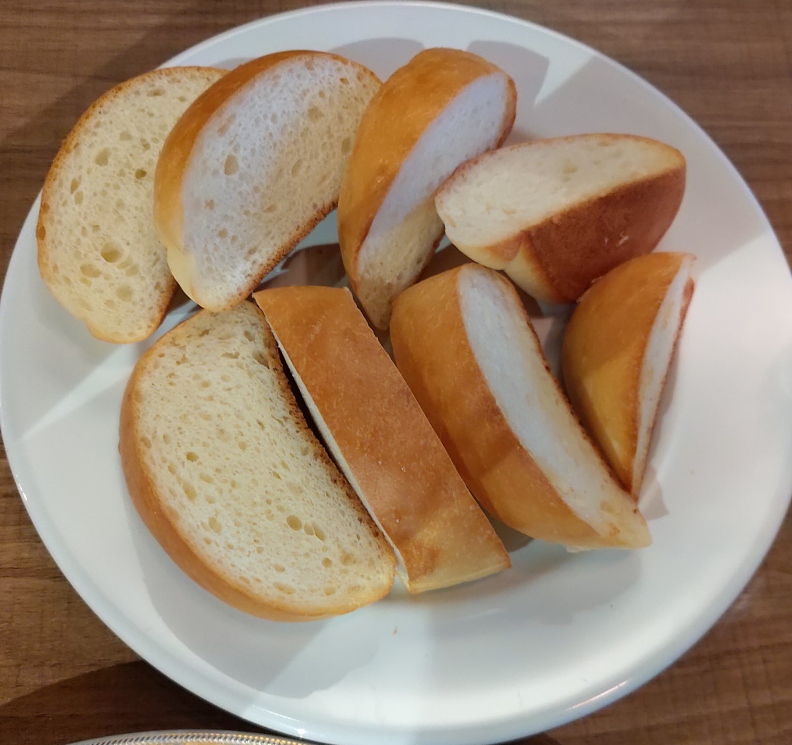
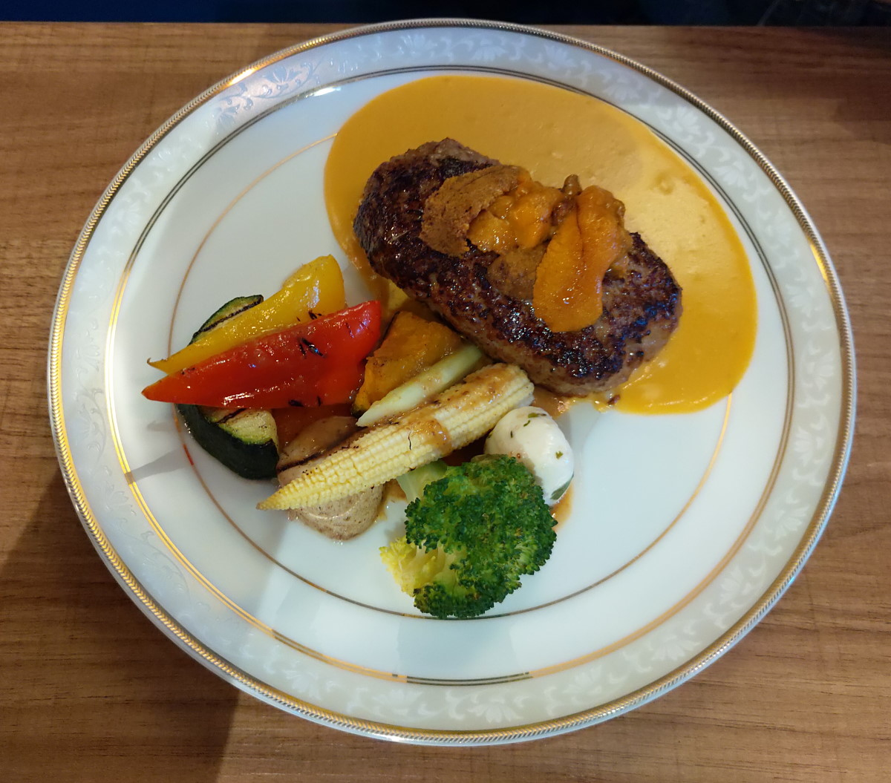
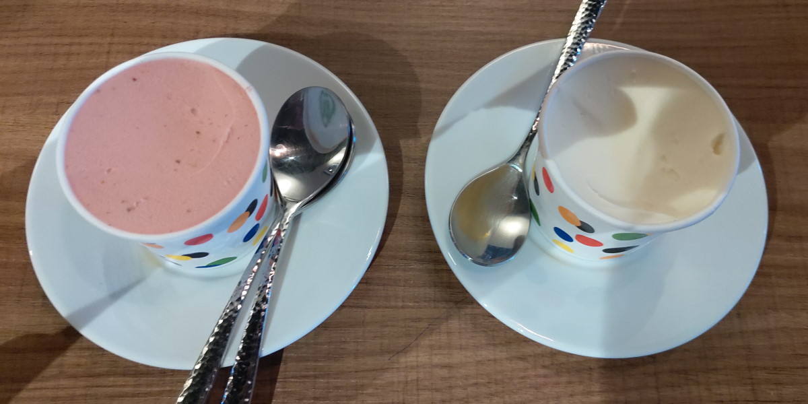

[台中] 無米藏 和洋食 二訪
| 餐廳名稱: | 無米藏 和洋食 |
|---|---|
| 地 址: | 台中市南屯區干城街96號 |
| 營業時間: | 週四 ~ 週日 11:30 - 13:30 17:30 - 21:00 |
| 週一 ~ 週三 公休 | |
| 電話 : | 04 2254 5055 |
上次利奇馬颱風來的時候，金牙豬堅持跟同學玩，沒吃到無米藏， 這次白鹿颱風侵襲台灣南部，金牙豬吵著要吃無米藏，反正是 星期六，就衝了。
無米藏菜單 還是看官網的版本好了，清楚多了。
黑豚Toro里肌豬排。 附 塔塔醬 與 它拿手的 多蜜醬。 好玩美啊，飯是土鍋炊的越光米，有點黏又不太黏， 顆粒分明 又 鬆軟。 豬排麵衣脆、豬肉扎實中帶點軟勁，有基本鹹度。沾醬更好吃。 偷偷實驗沾照燒醬，另一番風味。 高麗菜絲的醬汁也挺開胃的。 
今天點兩個套餐，一個單點。將其中一個套餐的飯，換成他們的自製麵包。麵包 沾 那些剩下的海膽醬、照燒醬，也很好吃。 
再點一次 海膽和牛漢堡排。主廚是怎麼想到把這兩個食材放到一起呢，蠻合的。 我不會迷信和牛，自從興沖沖地衝去吃了一次和牛牛排後， 油到受不了，也軟到受不了，實在覺得過頭了，再也不想吃和牛牛排了。 但這裡把和牛弄成漢堡，煎的外表焦脆，跟海膽配在一起， 完美啊。 
秘傳照燒醬和牛漢堡排。和牛漢堡排 一樣焦脆優秀。這個照燒醬，很好吃啊，比多蜜醬還好吃，何必主推多蜜醬呢。

兩個套餐的飯後甜點，莓果 與 百香果冰淇淋。這不是自製的，是屏東的專業Gelato店製作的，大部分使用台灣水果的知名冰淇淋店。好吃。 
跟一訪的印象一樣，主餐、配菜、甜點都是選過的，不會因為是搭配的，就配個便宜的省成本，真是優秀的店家啊。滿分!